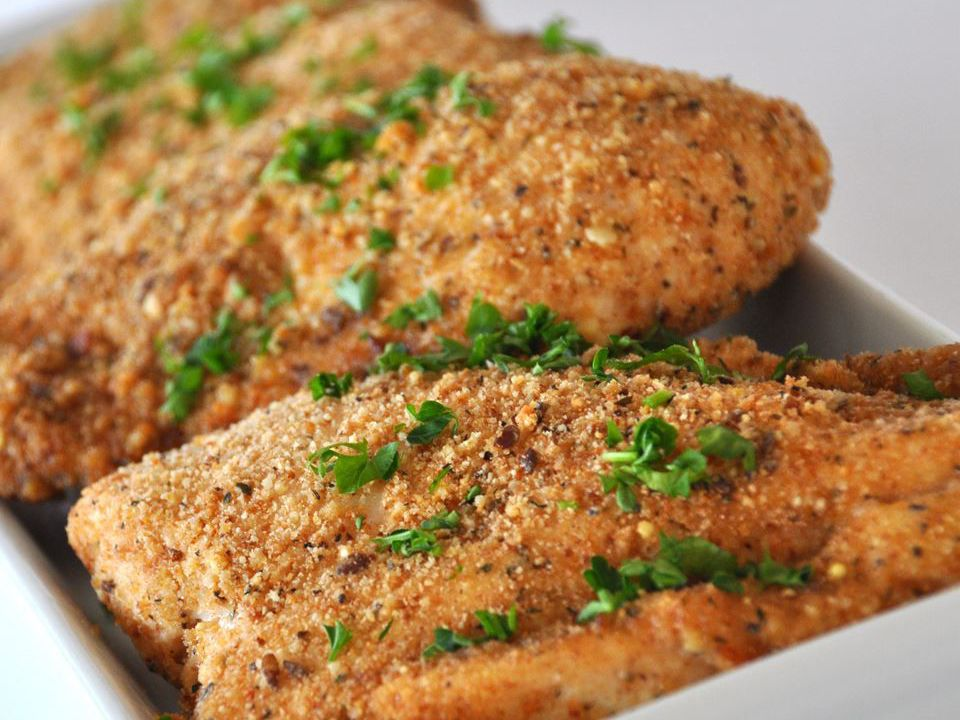

Parmesan Chicken

Breaded chicken breasts flavored with garlic and Parmesan cheese.
Cheesy, garlicky chicken is baked to crisp perfection in this beloved recipe with thousands of 5-star reviews. Easy, affordable, and full of Italian-inspired flavor, this oven-baked breaded chicken recipe makes the perfect meal for busy weeknights.
A few simple steps will give you succulent, basil-kissed chicken with a deep golden Parmesan crust. Add this easily customizable recipe to your rotation for a mouthwatering win every time.
Ingredients
- 2 tablespoons olive oil
- 1 clove garlic, minced
- 1 cup dry bread crumbs
- 2/3 cup grated Parmesan cheese
- 1 teaspoon dried basil leaves
- 1/4 teaspoon ground black pepper
- 6 skinless, boneless chicken breast halves
Steps
- Preheat oven to 350 degrees F (175 degrees C). Lightly grease a 9x13 inch baking dish.
- In a bowl, blend the olive oil and garlic.
- In a separate bowl, mix the bread crumbs, Parmesan cheese, basil, and pepper.
- Dip each chicken breast in the oil mixture, then in the bread crumb mixture. Arrange the coated chicken breasts in the prepared baking dish, and top with any remaining bread crumb mixture.
- Bake 30 minutes in the preheated oven, or until chicken is no longer pink and juices run clear.
- Serve hot and enjoy!